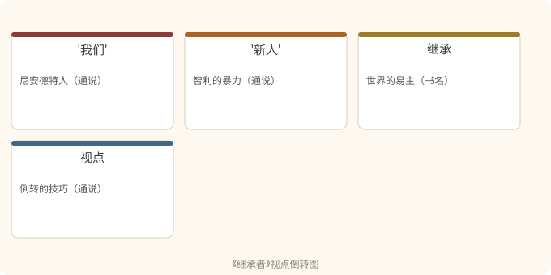

继承者
一、基本信息
| 作者 | 戈尔丁 |
|---|---|
| 成书/出版 | 1955年（作者页注记：Britannica 列举——继承者 (1955)——塔尖 (1964)） William Golding — Encyclopaedia Britannica（百科全书） |
| 国别/地区 | 英国 |
| 时代 | 近代 · 20世纪50年代 |
| 体裁 | 长篇小说 |
| 语言 | 英语 |

《继承者》视点倒转图（主题·结构图）
二、创作背景
作者页注记：继承者 (1955)、塔尖 (1964)——'（Britannica 列举）'。
Britannica：戈尔丁——《蝇王》作者、1983诺奖（作者页交叉——待核）。
题材（通说待核）：尼安德特人的'我们'视角——智利人（现代智人）的到来。
三、内容脉络
（通说待核）'我们'的集体视点：洛卡的族人。
（通说待核）'新人'的暴力与'我们'的消亡。
四、主要人物表
| 人物 | 身份 | 说明 |
|---|---|---|
| 洛卡 | 尼安德特长老 | （通说待核） |
五、主题与艺术特点
- 视点的倒转：'我们'是猎人眼中的'他者'（通说待核）。
- 文明的暴力（B注记语境——与《蝇王》对读）。
- '继承'的反讽（书名语境）。
六、影响与评论
- Britannica：列举（作者页注记）。
William Golding — Encyclopaedia Britannica（百科全书） - Britannica：1983诺奖（作者页交叉——待核）。
William Golding — Encyclopaedia Britannica（百科全书）
七、阅读建议
难点
- 集体第一人称。
- 史前人类学的想象（通说待核）。
- 《继承者》中译本（上海译文等——通说待核）。
- 英文原版。
戈尔丁第二作；与《蝇王》对读。
八、待核实
- 洛卡人名核对（通说）。
- 1955年出版细节待核。
- '集体视点'技巧细节待核。